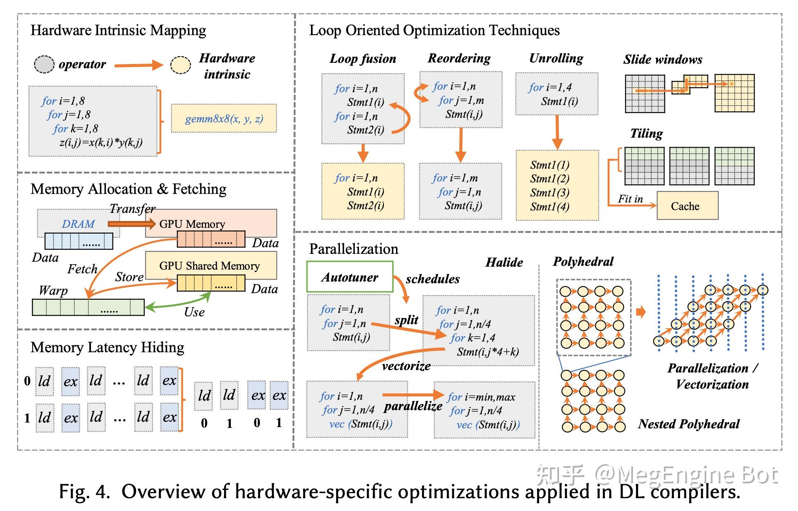

模型部署和加速
训练
训练框架
Genann: c语言的ANN训练框架开发教程(示例)
图解大模型训练系列之：DeepSpeed-Megatron MoE并行训练（原理篇）: 分析Deepspeed在MoE 大模型训练时候的设计思路
Machine Learning Engineering Open Book: 正在更新的图书,可以熟悉LLM及软硬件的相关知识
MACHINE LEARNING SYSTEMS with TinyML: 图书
Deepspeed
DeepSpeed Chat: 一键式RLHF训练，让你的类ChatGPT千亿大模型提速省钱15倍
- Deepspeed框架的Chat模型训练实例.
一键式 RLHF 训练 DeepSpeed Chat（一）：理论篇
DeepSpeed Inference: Enabling Efficient Inference of Transformer Models at Unprecedented Scale
DeepSpeed Compression: A composable library for extreme compression and zero-cost quantization
NLP大规模语言模型微调实践：DeepSpeed+Transformers实现简单快捷上手百亿参数模型微调
人手一个 ChatGPT，微软 DeepSpeed Chat 震撼发布，一键 RLHF 训练千亿级大模型
DeepSpeed-Chat：最强ChatGPT训练框架，一键完成RLHF训练！
使用DeepSpeed/P-Tuning v2对ChatGLM-6B进行微调
【DeepSpeed 教程翻译】二，Megatron-LM GPT2，Zero 和 ZeRO-Offload
【DeepSpeed 教程翻译】开始，安装细节和CIFAR-10 Tutorial
DeepSpeed结合Megatron-LM训练GPT2模型笔记（上）
如何使用 Ray + DeepSpeed + HuggingFace 简单、快速、高效、高性价比地微调和部署大型语言模型
DeepSpeed ZeRO++: A leap in speed for LLM and chat model training with 4X less communication
- chatgpt减少通信量方法
Megatron
数据并行
HPC、RDMA资料分享：2023 OpenFabrics Alliance会议
- RDMA资料,见百度网盘, 解压密码: ofa2023
模型并行
流水并行
调优方法
- 谷歌深度学习调优手册中文翻译
绕开算力限制，如何用单GPU微调 LLM？这是一份「梯度累积」算法教程
- LLaMA高效调优库
Finetuning Falcon LLMs More Efficiently With LoRA and Adapters
推理
推理框架
TT-Buda: tenstorrent硬件的AI编译工具
Text Generation Inference源码解读（二）：模型加载与推理: TGI优化方法总结和新量化推理方法添加
- 清华大模型推理库, 最低2G内存,支持chatGLM/盘古/chatRWKV/LLaMA,只需安装JTorch,提升速度
- OpenCV竞品, 高性能计算机图像系统, 支持C++/JS,针对ARM优化,支持多种异构硬件
- llm加速库,支持moss/chatGLM,baichuan,支持手机端和GPU(int8)
Merge Large Language Models with mergekit: 四种模型融合方法, SLERP、TIES、DARE和级联
FlagPerf: 智源开源的异构AI芯片测评框架
jan: 本地大模型运行软件, 可替代chatgpt
量化
Accelerating Large Language Models with Mixed-Precision Techniques
剪枝
蒸馏
ChatLLM.cpp: 基于ggml的C++大模型CPU推理引擎
深度学习编译器
- 旷视编译器介绍
- 编译器最重要的两个概念是IR和PASS
- 前端优化方法
- node level:去掉无用节点,替换搞笑节点
- block level:代数简化,算子融合
- dataflow level:静态内存优化
- 后端优化(见下图)
- 通用优化:循环展开/循环融合/访存掩盖
- 硬件优化:指令映射(gemm)/向量化(循环)/手工kernel
- MEGCC编译过程
- Megengine导入模型并静态图优化
- 转换为MLIR的MGB IR
- 生成Abstract Kernel IR,最终转换成Kernel IR
- 导出为runtime model和runtime kernel

- 后续PPT有时间可以整理一些
- 原博客在微信公众号
- cuDLA是加速引擎库
- webgpu教材翻译,在网页内访问GPU
Automated GPU Kernel Fusion with XLA: XLA融合介绍
Intel(R) Extension for Scikit-learn*: Intel Extension, import然后执行替换的方式很不错
torchquad@github:PyTorch实现的GPU任意维高性能数值积
Text Generation Inference: huggingface的推理引擎
Tools
Search with Lepton: 实现的一个对话式搜索引擎, 试用在这里
cvGPUSpeedup: CV-CUDA的加速实现, 优化了读取
onnxruntime-server: onnx文件的serve框架,可以自动配置REST API